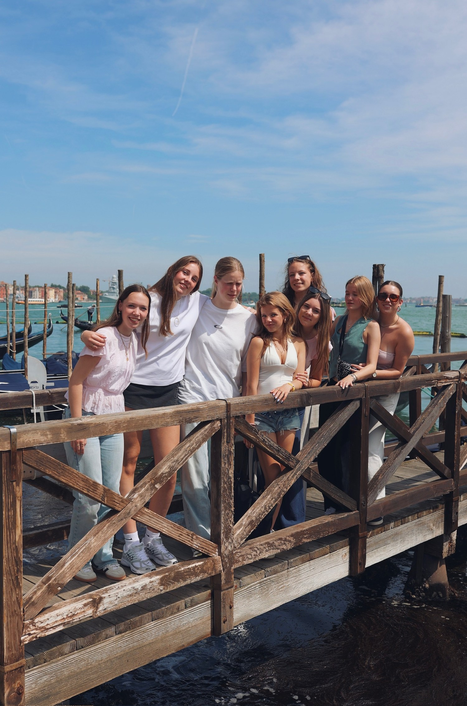
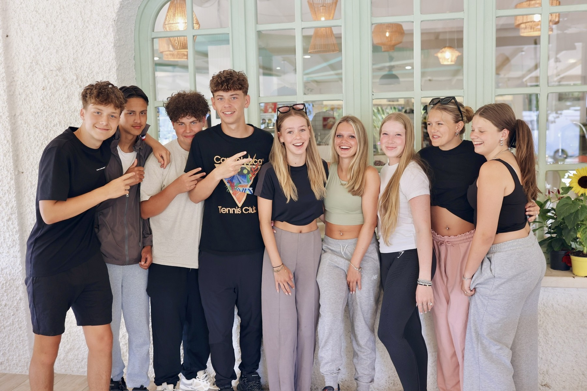
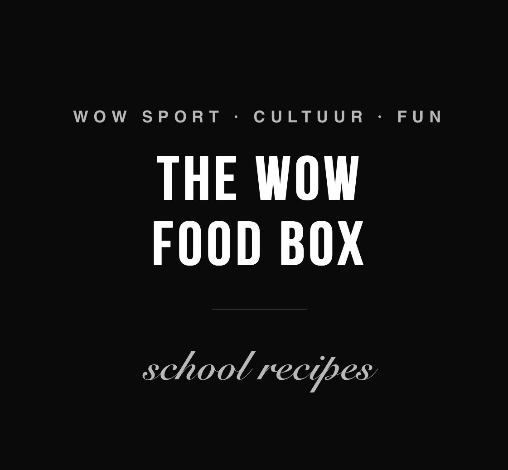

Buongiorno, ciao tutti! Sport, cultuur en avontuur in Milaan, Caorle en Venetië — onvergetelijk met de WOW Famiglia.
Milaan · Caorle · Venetië — Italië
Zondag — 18:00 uur
Zaterdag — ± 10:00 uur
4/5-persoons huisjes — 5★ Villaggio San Francesco
Luxe touringcars of dubbeldekkers
Docenten & WOW team
Ontbijt & lunch georganiseerd · avond WOW box
Sport · Cultuur · Fun · Vrijheid
De laatste reis met je klasgenoten. Het afscheid van de middelbare school.
Je eindexamens achter de rug. Jarenlang samen naar school, samen gelachen, gestrest, gefeest en herinneringen gemaakt. Nu is het tijd voor het laatste hoofdstuk: samen op reis en afscheid nemen van je middelbare schooltijd.
Van de mode, cultuur en energie van Milaan naar de kanalen en historische straten van Venetië en vervolgens naar de zon, zee en het strand van Caorle. WOW Italia combineert het beste van Noord-Italië met sport, ontspanning en natuurlijk heel veel fun.
Je ontdekt nieuwe plekken, beleeft Italië samen met je klasgenoten, sport, geniet van het strand en krijgt de vrijheid om er écht een bijzondere reis van te maken. Met je eigen huisje, professionele begeleiding en een programma waarin alles voor je geregeld is.
En natuurlijk is er de WOW Box. Samen met je vrienden bereid je op verschillende avonden je eigen maaltijd: lekker, makkelijk en gezellig. Geen standaard buffet, maar samen koken, eten en genieten in je eigen huisje.
Dit is jullie laatste reis samen als klasgenoten en vrienden. Een afsluiting van een bijzondere periode en het begin van iets nieuws.
Sport. Cultuur. Strand. Fun.
Samen herinneringen maken.
JOIN THE WOW.

Milaan — stijl, cultuur & vrijheid
We starten onze reis in Milaan, de modestad van Italië. De indrukwekkende Duomo en het Castello Sforzesco laten meteen zien waarom Milaan zoveel meer is dan alleen mode.
Daarna duiken jullie het centrum in. Van Gucci, Prada en Armani tot de leukste winkels voor ieder budget. Na de culturele highlights krijgen jullie de vrijheid om zelfstandig Milaan te ontdekken, samen met je klasgenoten.
Even verdwalen in de stad, een terrasje pakken, shoppen of gewoon genieten van de Italiaanse sfeer. Milaan beleef je op je eigen manier.
Na een late lunch stappen we weer in de bus en reizen we door naar Caorle.
Milaan: stijl, cultuur, vrijheid en de perfecte start van jullie WOW-reis.
Venetië — een stad die je moet beleven
Een hele dag Venetië. Een stad die eigenlijk niet uit te leggen is — je moet er rondlopen, verdwalen en haar zelf beleven.
Smalle steegjes, verborgen pleinen, eeuwenoude gebouwen, eindeloze grachten en natuurlijk het beroemde Piazza San Marco. Tussendoor ontdek je de leukste winkels, proef je de sfeer en maak je samen met je klasgenoten herinneringen die je niet snel vergeet.
Geen strak programma van begin tot eind. Jullie krijgen de vrijheid om Venetië op jullie eigen tempo te ontdekken.
Samen op pad, een beetje verdwalen en vooral genieten.
Venetië is magisch. Venetië is mysterieus. Venetië vergeet je nooit.
Join the WOW.

We verblijven op de luxe 5-sterren Camping Villaggio San Francesco aan de Adriatische kust — in gezellige 4/5-persoons huisjes. Bij aankomst krijg je de sleutels, laden we de bus uit en begin je het Villaggio te ontdekken.
Het Villaggio is een heel dorp op zich: sportvelden, zwembaden, supermarkt en non-stop activiteiten. Dag 2 en dag 4 staat er een sportief programma op het rooster — jij kiest wat je leuk vindt.

Padellen, voetbal, volleybal, fitness en meer. Maak er een wedstrijd van met je klas.
Chillen aan het zwembad, zonnen op het strand of een duik in de Adriatische Zee.
Elke avond kook je samen met je huisgenoten uit de WOW box — en kies jij wat je eet.
Eigen tijd om te doen waar je zin in hebt: winkelen in de supermarkt, relaxen of een spelletje doen.
Programma zoals gebruikt tijdens de reis — exacte tijden kunnen licht afwijken per groep en seizoen.
Vergeet dit niet mee te nemen:
Bij aankomst ontvangt ieder WOW-huisje een eigen WOW Foodbox, afgestemd op 3, 4 of 5 leerlingen. De box bevat de basis voor ontbijt, lunch en diner tijdens het verblijf, inclusief ingrediënten voor eenvoudige, lekkere maaltijden. We houden waar nodig rekening met vegetarische wensen, halal en allergieën of andere dieetwensen.

Bij de Foodbox horen onze School Recipes: geen ingewikkelde gerechten of lange boodschappenlijsten. Met de ingrediënten uit de box gaan leerlingen samen aan de slag — en bepalen ze zelf wat ze eten, wie kookt, wie de tafel dekt en wie opruimt.
Verdeel de taken, kook samen en geniet samen.
Leer plannen, koken, opruimen en verantwoordelijkheid nemen.
Pas gerechten aan naar eigen smaak en voorkeur.
Gebruik de voorraad slim en beperk verspilling.
Koken wordt een leuk onderdeel van de WOW Experience.
Binnen duidelijke kaders krijgen leerlingen de vrijheid om hun eigen maaltijden te organiseren. De WOW Foodbox is meer dan eten tijdens een schoolreis — het is een actief onderdeel van de WOW-filosofie: zelfstandigheid, samenwerking, verantwoordelijkheid, verbinding en plezier.
Strandsport en groepsactiviteiten, passend bij de Italiaanse kust.
De kanalen van Venetië, de sfeer van Milaan en de Italiaanse levensstijl.
Ontspanning en groepsmomenten aan de kust bij Caorle.
Dezelfde professionele organisatie en veiligheidsstandaarden als bij alle WOW-reizen.
Ontdek wat WOW Italia voor jullie leerlingen kan betekenen.
Plan een kennismaking →